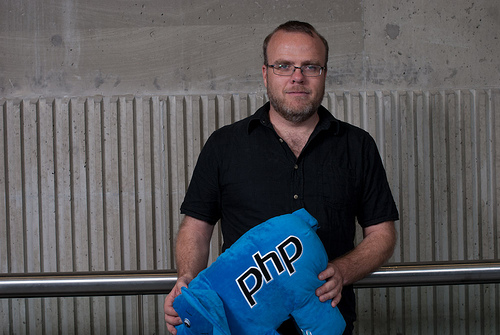
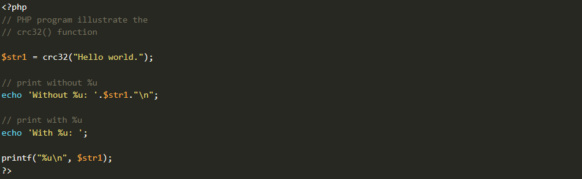
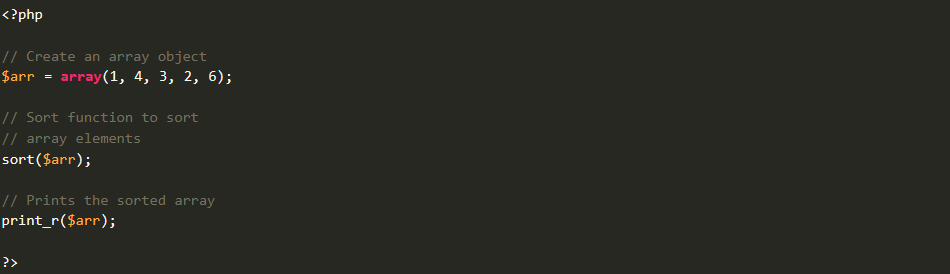
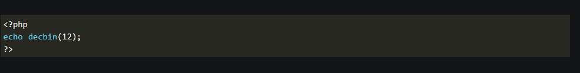
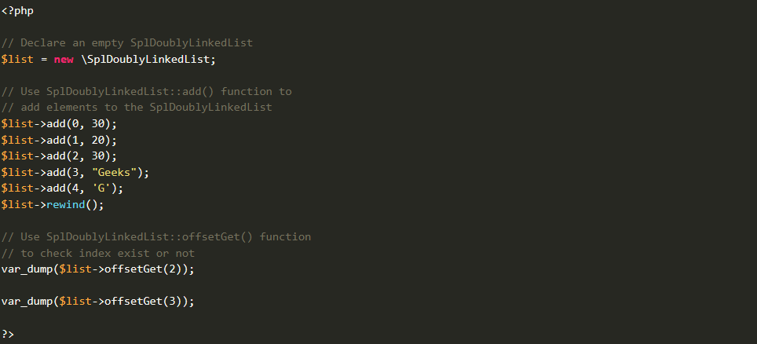

На сегодняшний день PHP является одним из наиболее
распространенных языков веб-программирования.
Подавляющие большинство сайтов и веб-сервисов
в интернете написано с помощью PHP.
PHP был создан в 1994 году датским программистом Расмусом Лердорфом и изначально представлял собой набор скриптов на другом языке Perl. Позже этот набор скриптов был переписан в интерпретатор на языке Си. И с самого возникновения PHP (сокращение от PHP: Hypertext Preprocessor - PHP: Препроцессор гипертекста) представлял удобный набор инструментов для упрощенного создания веб-сайтов и веб-приложений.

Строки представляют собой набор символов. Например, ‘G’ - это символ, а ‘GeeksforGeeks’ - строка.
Установка: Эти функции не требуют никакой установки. Они являются частью ядра PHP.

Массивы PHP - это структура данных, которая хранит несколько элементов аналогичного типа в одной переменной. Массивы полезны для создания списка элементов аналогичного типа. К нему можно получить доступ, используя их индексный номер или ключ. Функциям массива разрешено взаимодействовать и манипулировать элементами массива различными способами. Функции массива PHP используются для одномерных и многомерных массивов.

Предопределенные математические функции в PHP используются для обработки математических операций в типах integer и float. Эти математические функции являются частью ядра PHP.

Стандартная библиотека PHP (SPL) - коллекция стандартных структур данных. Структура данных SPL сгруппировала содержимое в соответствии с их реализацией.

Приложения PHP
Серверная веб-разработка: Это разработка, при которой программа запускается на сервере, занимающемся созданием содержимого веб-страниц.
Системы управления контентом (CMS): Это фреймворк, уже разработанный другими программистами и верстальщиками, на котором вы можете либо поделиться своими знаниями и навыками, либо просто использовать навыки этих верстальщиков для создания собственного веб-сайта или блога
Веб-сайты электронной коммерции: Электронная коммерция, или электронная коммерция, относится к покупке и продаже товаров и услуг через Интернет.
Приложения, управляемые базами данных: Это программное приложение, которое использует базу данных для хранения, управления и извлечения данных. Он использует систему управления базами данных (СУБД) для организации данных и манипулирования ими, обеспечивая эффективное хранение, извлечение и управление данными.
Веб-API: Как следует из названия, это API, доступ к которому осуществляется через Интернет по протоколу HTTP. Это фреймворк, который помогает вам создавать и развивать RESTFUL-сервисы на основе HTTP.
Что такое полная форма PHP?
ИПолная форма PHP - это Гипертекстовый препроцессор Ранее он сокращался как Личная домашняя страница.
Легко ли изучать PHP?
Да, чтобы стать профессионалом в PHP, потребуется от 6 до 12 месяцев, так что это больше похоже на простой в изучении язык программирования.
Можете ли вы выучить PHP самостоятельно?
Да, вы можете легко выучить PHP самостоятельно, просто найдите какой-нибудь хороший ресурс, такой как SevenCode™ и YouTube
Для чего используется PHP?
PHP используется для широкого спектра задач веб-разработки, но вот некоторые из его наиболее распространенных приложений.